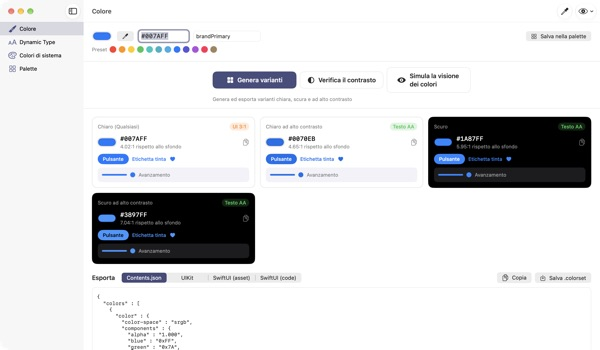
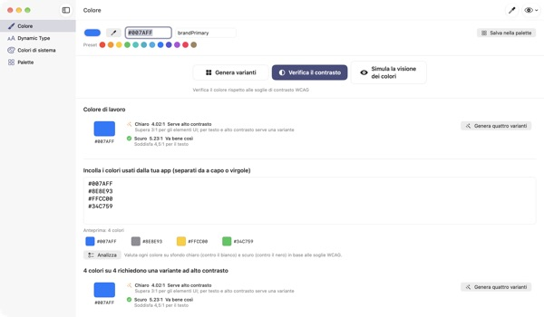
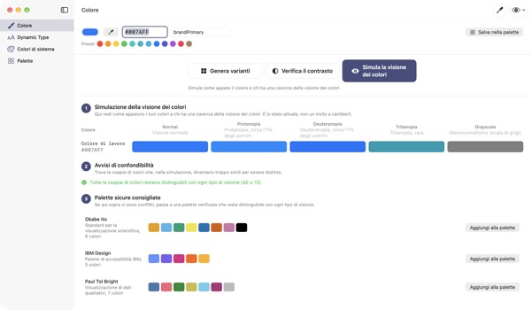
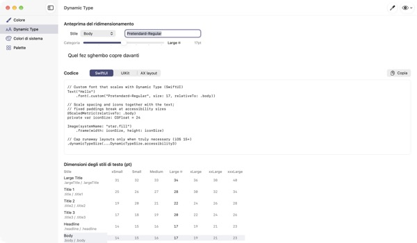

Un colore in entrata,
quattro aspetti in uscita
I colori di sistema si adattano da soli alla modalità scura e ad Aumenta contrasto. I colori del tuo brand no. TetraTint parte da un colore della modalità chiara, crea le varianti Chiaro, Chiaro ad alto contrasto, Scuro e Scuro ad alto contrasto, e le esporta direttamente in Xcode.
Tutte le funzioni sono gratuite. Richiede macOS 14 o successivo.

Prova il colore del tuo brand
Incolla un valore hex o tocca un preset. Con lo stesso calcolo dell’app vedi subito le quattro varianti e il loro contrasto.
Il colore del tuo brand è mai sparito in modalità scura?
Il blu scelto in modalità chiara sul nero sembra spento, e chi usa Aumenta contrasto fa fatica a leggere il testo. Cercare un colore per ogni aspetto e misurare ogni rapporto a mano porta via mezza giornata. TetraTint ricava le varianti come cambiano i colori di sistema tra un aspetto e l’altro, e ti dice subito se ognuna supera la soglia.
Controlla in un colpo tutti i colori che usi
Incolla l’intero elenco hex della tua app: ogni colore viene classificato come va bene così, serve alto contrasto o solo decorativo.
Un clic trasforma un colore problematico in quattro varianti salvate nella palette. Utile anche per prepararsi all’indicazione di accessibilità Contrasto sufficiente sull’App Store.

Guarda con gli occhi di chi ha un deficit della visione dei colori
Simula la tua palette con protanopia, deuteranopia, tritanopia e scala di grigi, con un avviso per ogni coppia che diventa difficile da distinguere.
Carica con un clic le palette adatte al daltonismo Okabe–Ito, IBM e Paul Tol, oppure usa il pulsante a forma di occhio in alto a destra per vedere così tutta l’app.

Anche i font personalizzati seguono la dimensione del testo
Consulta gli 11 stili di testo in 7 dimensioni e sposta un cursore per vedere le dimensioni reali.
Inserisci il nome PostScript del font e ottieni codice UIKit, SwiftUI e @ScaledMetric, più il codice che cambia layout con testo grande.

Tre passaggi per iniziare
- 1
Inserisci un colore base
Incolla un hex, preleva un colore ovunque sullo schermo con il contagocce o scegli un preset.
- 2
Controlla le quattro varianti
Leggi i badge del contrasto e ritocca le varianti che non si sposano col brand.
- 3
Esporta in Xcode
Copia o salva come Contents.json, .colorset o codice UIKit e SwiftUI.
Come nascono le varianti e cosa dicono i badge
- Chiaro (Qualsiasi)
- Il tuo colore così come l’hai inserito
- Chiaro ad alto contrasto
- Un po’ più saturo, scurito fino a 4.5:1 sul bianco
- Scuro
- Un po’ più chiaro e vivace (luminosità +5, saturazione +3)
- Scuro ad alto contrasto
- Schiarito fino a 7:1 sul nero
- Testo AA
- 4.5:1 o più rispetto allo sfondo, adatto al testo
- UI 3:1
- 3:1 o più, va bene per pulsanti e icone ma non per il testo
- Basso
- Sotto 3:1, da non usare per testo, icone o stati
- Esportazione
- Contents.json · .colorset · UIKit · SwiftUI, o l’intera palette in un solo .xcassets
I valori di riferimento dei colori di sistema provengono dalle Human Interface Guidelines di Apple e possono cambiare con gli aggiornamenti del sistema. Nell’app pubblicata usa le API dei colori di sistema.
Domande frequenti
È davvero gratis?
Sì. Tutte le funzioni sono gratuite, senza account né pubblicità. Se ti è stata utile, puoi lasciare una mancia dalle Impostazioni; non sblocca nulla.
Le varianti generate non si adattano al mio brand.
Ritocca ogni variante con il selettore colore della sua scheda. Rigenera tutto scarta le modifiche manuali e ricava di nuovo tutto dal colore base.
Come vengono calcolate le varianti?
Seguono il modo in cui i colori di sistema di Apple cambiano davvero tra un aspetto e l’altro: un po’ più chiare e vivaci in scuro, almeno 4.5:1 sul bianco in chiaro ad alto contrasto, almeno 7:1 sul nero in scuro ad alto contrasto.
Che cosa vuol dire un avviso nella simulazione della visione dei colori?
Che con quella simulazione la differenza tra due colori scende sotto ΔE 12 e diventa difficile distinguerli. Non affidarti solo al colore: aggiungi icone, motivi o etichette, oppure passa a una palette sicura.
Come faccio a far supportare Dynamic Type a un font personalizzato?
In Dynamic Type inserisci il nome PostScript del font e scegli uno stile per ottenere codice UIKit, SwiftUI e @ScaledMetric. Nelle dimensioni di accessibilità Body diventa più del triplo, quindi evita altezze fisse e lineLimit(1).
I colori esportati sembrano diversi da quelli di sistema nella mia app.
I valori di riferimento provengono dalle Human Interface Guidelines e possono cambiare tra una versione e l’altra del sistema. Per i colori di sistema usa sempre le API UIColor o Color.
Dove viene salvata la mia palette?
Solo sul tuo Mac. Niente viene sincronizzato nel cloud o inviato altrove. Trovi i dettagli nell’informativa sulla privacy.
Il colore prelevato con il contagocce viene salvato?
No. Viene letto solo il valore del colore nel punto scelto e usato come colore di lavoro. Nessuna immagine dello schermo viene salvata o inviata.
Su quali Mac funziona?
Su macOS 14 (Sonoma) o successivo. Quando esporti, scegli tu dove salvare i file.
Bug, idee o domande? Scrivi a leeo@kakao.com. Di solito rispondiamo entro 2–3 giorni.